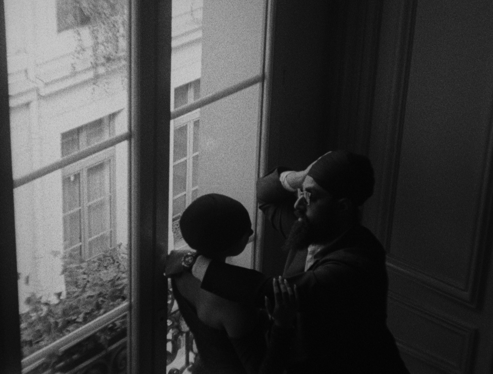
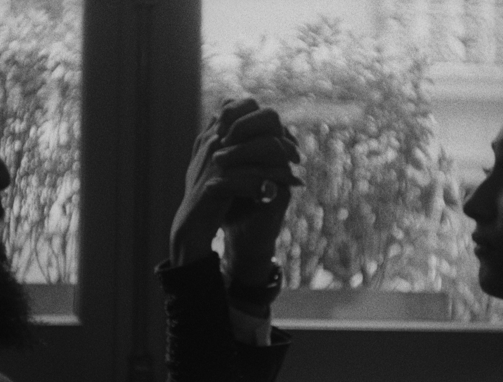
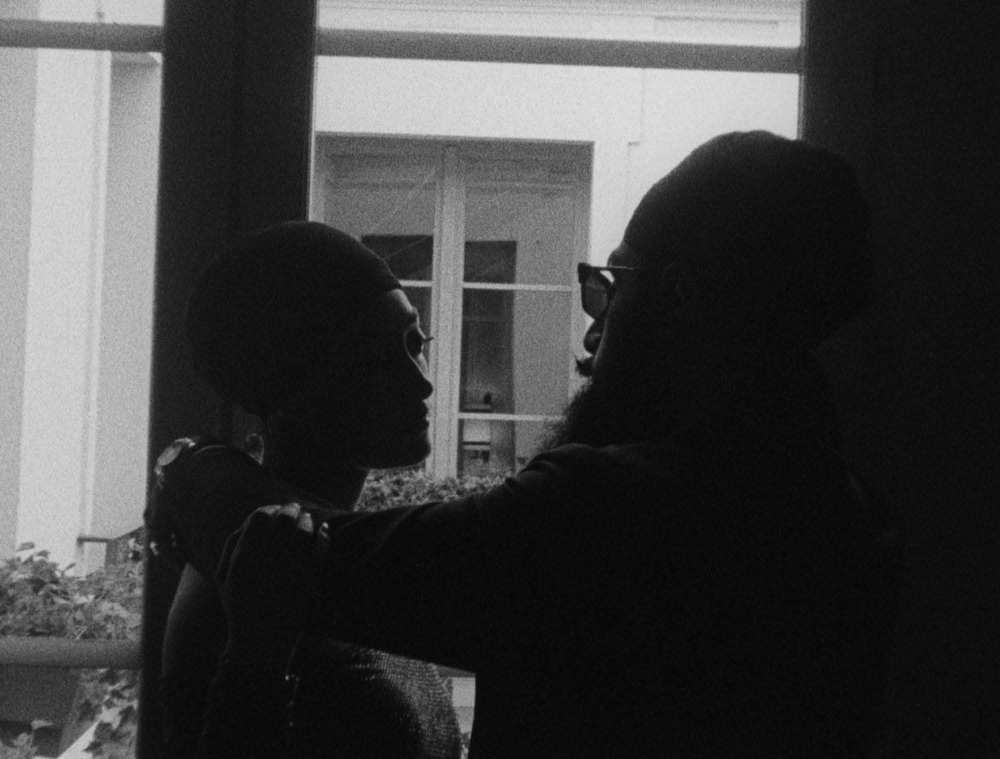
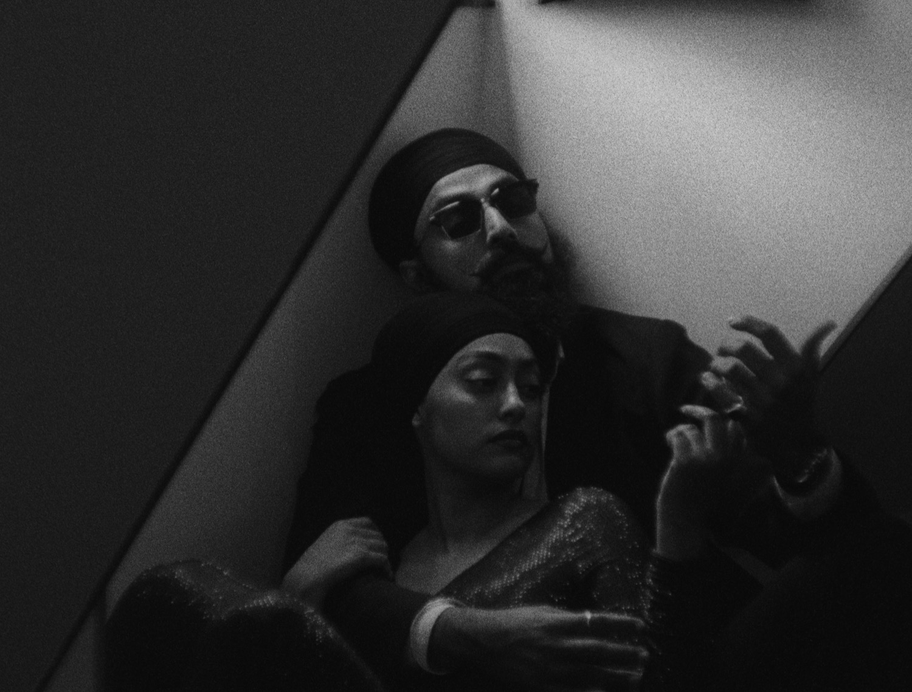

The Film
A city that has watched a million love stories, and one more it had not seen before.
A stylised film made purely for the two of them, two days in Paris given over to their love story, made to show Anoop and Rasans together as a couple for the world to see. All of it caught on 16mm. Film slows you down in a city that never does, so you stop reaching for every corner and begin holding the ones that matter.
Kodak stock does something to Paris light that digital cannot reach. It softened the stone and warmed the evening, and held the colour of the two of them right through to the last frame on the roll.

There are no second takes on film. The crank turns, the magazine empties, and what happened in those thirty seconds is the only version there will ever be, which is exactly the promise of it. Singular, like the two of them.
Marcus Herne wrote the score afterward, a piece for Anoop and Rasans alone. The picture found the music somewhere over the rooftops, and the film was finished.



- Couple
- Anoop & Rasans
- Location
- Paris, France
- Captured on
- Kodak 16mm film
- Original score
- Marcus Herne
- Direction, film & edit
- Sanvir Chana